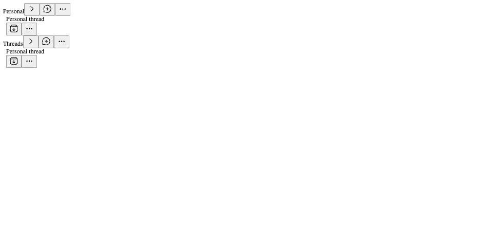

#4093 · Personal project participates in two sidebar groups
Base: 9b8c1d3457b00359af206e3fd423fe50520182c2
REPRODUCED · Root-cause confidence: high
1. TL;DR
Project organization renders a Personal thread twice. The plugin receives the Personal project alongside standard projects and creates a project section for every entry. It also renders Personal threads in its built-in Threads section. Filtering Personal out of project rows preserves the existing Threads section and removes the duplicate project entry from both the sidebar and visibility-group construction.
2. Claims vs findings
| Claim | Finding | Evidence |
|---|---|---|
| Personal rows appear twice in project mode | Verified | Two DOM rows carry the same thread ID in both clean checkouts. |
| A standard project is not needed | Verified | Parameterized regression fails with and without standard projects. |
| The host passes Personal in projects | Verified in source | SDK bridge explicitly appends personalProject. |
| More includes both groups | Verified in source | visibilityGroups combines Threads with every project row; menu interaction not exercised. |
| Reported real-data counts and server payload | Unverified | No user runtime or database accessed. |
3. Environment
Trusted get-bb/bb origin/main at the commit above, macOS 26.6.2 arm64, Node 22.22.3, pnpm 9.15.0 via Corepack. Frozen installation completed; full Turbo build passed (59 tasks). No provider, application server, ports, database, or real user data was needed. Tests use the repository's SDK component harness and jsdom. The system pnpm launcher was broken; a temporary Corepack shim supplied the repository-pinned version.
4. Minimal reproduction
- Clone the trusted repository and detach at the base commit.
- Install with
pnpm install --frozen-lockfile --prefer-offlineand build withpnpm exec turbo run build. - Apply the regression patch shown below to add tests derived from the existing repository fixtures.
- Run
pnpm exec turbo run test --filter=bb-plugin-thread-list.
Expected: [ 'thr_personal' ] Received: [ 'thr_personal', 'thr_personal' ] Test Files 1 failed | 25 passed (26) Tests 3 failed | 308 passed (311)
The failures are the corrected project-heading assertion and the two new single-row cases. Test changes:
diff --git a/plugins/thread-list/app.test.tsx b/plugins/thread-list/app.test.tsx
index 8961ecbcb..21a6c6730 100644
--- a/plugins/thread-list/app.test.tsx
+++ b/plugins/thread-list/app.test.tsx
@@ -198,7 +198,6 @@ describe("thread-list plugin", () => {
await screen.findByText("Pinned thread");
expect(sectionHeaders()).toEqual([
"Pinned",
- "Personal",
"App",
"Web",
"Threads",
@@ -218,6 +217,33 @@ describe("thread-list plugin", () => {
expect(within(threadsGroup).getByText("Personal thread")).not.toBeNull();
});
+ it.each([true, false])(
+ "renders personal rows once with standard projects: %s",
+ async (includeStandardProjects) => {
+ setPreferencesMirrorStorageForTest(null);
+ renderList(
+ { organizationMode: "project" },
+ {
+ sidebarThreads: {
+ projects: includeStandardProjects
+ ? PROJECTS
+ : PROJECTS.filter((project) => project.isPersonal),
+ sections: [],
+ threads: THREADS.filter(
+ (thread) => thread.projectId === PERSONAL_PROJECT_ID,
+ ),
+ },
+ },
+ );
+
+ await screen.findByTitle("Threads");
+ expect(threadIds()).toEqual(["thr_personal"]);
+ expect(sectionHeaders()).toEqual(
+ includeStandardProjects ? ["App", "Web", "Threads"] : ["Threads"],
+ );
+ },
+ );
+
it("calls onNavigate when a thread row is opened", async () => {
setPreferencesMirrorStorageForTest(null);
const listProps = props();

5. Root cause
apps/app/src/lib/plugin-sidebar-hooks.ts:163 constructs allProjects = [...data.projects, data.personalProject], then maps it to SDK projects at line 183. plugins/thread-list/app/list/ProjectList.tsx:569 maps all supplied projects to project rows. The separate personal-thread lookup at line 595 and Threads content at line 674 select the same project ID. This creates two distinct section IDs backed by the same data; deduplicating section IDs cannot remove the duplicate rows.
plugins/thread-list/app/list/ProjectList.tsx:700 similarly constructs a Threads visibility group plus one group per project row. The duplication is a composition error in this existing plugin, not duplicate thread storage.
6. Proposed fix and validation
Exclude PERSONAL_PROJECT_ID while deriving projectRows. Keep Personal available in the SDK payload and keep the dedicated Threads section. No public contract, stored state, dependency, or product setting changes. The production edit and regression tests affect two files, totaling 46 added/deleted text lines.
pnpm exec turbo run test typecheck --filter=bb-plugin-thread-list Test Files 26 passed (26) Tests 311 passed (311) Tasks 6 successful, 6 total
git diff --check passed; no binary changes.
7. Verification
The same agent created a second clean temporary checkout at the recorded commit, installed frozen dependencies separately, copied only the new regression test, and reran pnpm exec turbo run test --filter=bb-plugin-thread-list --force. It produced the identical 3 failures and 308 passes, including two copies of thr_personal. Production files were unchanged in that checkout. No ports or data directories were used. This second run required no report correction.
8. Related issues and pull requests
Sidebar search reviewed #4088 (provider icons), #1614 (project ordering), and #3949 (default organization). Those concern different behavior. No open PR referencing #4093 was found by search or issue timeline metadata before implementation.
9. Appendix: complete regression test
Replace plugins/thread-list/app.test.tsx with this file after checking out the recorded base. Raw logs remain in local evidence storage.
// @vitest-environment jsdom
import { cleanup, screen, waitFor, within } from "@testing-library/react";
import { afterEach, describe, expect, it, vi } from "vitest";
import type { PluginThreadListProps } from "@get-bb/plugin-sdk/app";
import {
loadPluginApp,
renderSlot,
type RenderSlotOptions,
} from "@get-bb/plugin-sdk/testing/app";
import { PERSONAL_PROJECT_ID } from "@bb/domain";
import { makePluginProject, makeSidebarThread } from "./app/model/fixtures.js";
import {
resetPreferencesSyncForTest,
setPreferencesMirrorStorageForTest,
} from "./app/preferences/preferences-sync.js";
import {
defaultPreferences,
type PreferenceValues,
} from "./shared/preferences.js";
const app = await loadPluginApp(() => import("./app"));
const registration = app.threadLists[0];
if (!registration) throw new Error("thread-list slot not registered");
const PROJECTS = [
makePluginProject({
id: PERSONAL_PROJECT_ID,
name: "Personal",
isPersonal: true,
}),
makePluginProject({ id: "proj_app", name: "App" }),
makePluginProject({ id: "proj_web", name: "Web" }),
];
const SECTIONS = [
{ id: "sec_later", name: "Later", createdAt: 1, updatedAt: 1 },
{ id: "sec_review", name: "Review", createdAt: 2, updatedAt: 2 },
];
const THREADS = [
makeSidebarThread({
id: "thr_pinned",
projectId: "proj_app",
title: "Pinned thread",
isPinned: true,
pinnedAt: 10,
pinSortKey: "a",
createdAt: 10,
updatedAt: 10,
latestAttentionAt: 10,
}),
makeSidebarThread({
id: "thr_parent",
projectId: "proj_app",
title: "Parent thread",
createdAt: 8,
updatedAt: 8,
latestAttentionAt: 8,
}),
makeSidebarThread({
id: "thr_child",
projectId: "proj_app",
title: "Child thread",
parentThreadId: "thr_parent",
createdAt: 7,
updatedAt: 7,
latestAttentionAt: 7,
}),
makeSidebarThread({
id: "thr_later",
projectId: "proj_web",
title: "Later thread",
sectionId: "sec_later",
createdAt: 6,
updatedAt: 6,
latestAttentionAt: 6,
host: { id: "host_laptop", name: "Laptop" },
environment: {
id: "env_web",
name: null,
branchName: "main",
path: null,
providerId: null,
isWorktree: false,
workspaceDisplayKind: "other",
},
}),
makeSidebarThread({
id: "thr_personal",
projectId: PERSONAL_PROJECT_ID,
title: "Personal thread",
createdAt: 5,
updatedAt: 5,
latestAttentionAt: 5,
}),
];
function props(): PluginThreadListProps {
return {
activeThreadId: null,
activeProjectId: null,
isCompactViewport: false,
onNavigate: vi.fn(),
searchQuery: "",
};
}
function renderList(
preferences: Partial<PreferenceValues>,
options: RenderSlotOptions = {},
) {
return renderSlot(registration, props(), {
sidebarThreads: { projects: PROJECTS, sections: SECTIONS, threads: THREADS },
rpc: {
listPreferences: () => ({
preferences: { ...defaultPreferences(), ...preferences },
}),
setPreference: (input: unknown) => input,
},
...options,
});
}
function sectionHeaders(): string[] {
return Array.from(
document.querySelectorAll('[data-sidebar-sticky-tier="label"] [title]'),
(element) => element.getAttribute("title") ?? "",
);
}
function threadIds(): string[] {
return Array.from(
document.querySelectorAll("[data-sidebar-thread-id]"),
(element) => element.getAttribute("data-sidebar-thread-id") ?? "",
);
}
afterEach(() => {
cleanup();
resetPreferencesSyncForTest();
setPreferencesMirrorStorageForTest(undefined);
});
describe("thread-list plugin", () => {
it("shows the navigation skeleton until preferences load", () => {
setPreferencesMirrorStorageForTest(null);
renderSlot(registration, props(), {
sidebarThreads: { projects: PROJECTS, sections: SECTIONS, threads: THREADS },
rpc: { listPreferences: () => new Promise(() => undefined) },
});
expect(screen.getByLabelText("Loading sidebar navigation")).not.toBeNull();
expect(threadIds()).toEqual([]);
});
it("renders pinned, custom sections, and loose threads in chronological mode", async () => {
setPreferencesMirrorStorageForTest(null);
const { rpcCalls } = renderList({ organizationMode: "chronological" });
await screen.findByText("Pinned thread");
expect(rpcCalls.map((call) => call.method)).toEqual(["listPreferences"]);
expect(sectionHeaders()).toEqual(["Pinned", "Later", "Review", "Threads"]);
expect(threadIds()).toEqual([
"thr_pinned",
"thr_later",
"thr_parent",
"thr_child",
"thr_personal",
]);
expect(
screen.getByRole("button", { name: "Collapse Parent thread threads" }),
).not.toBeNull();
});
it("groups threads by machine in machine mode", async () => {
setPreferencesMirrorStorageForTest(null);
renderList({ organizationMode: "machine" });
await screen.findByText("Pinned thread");
expect(sectionHeaders()).toEqual(["Pinned", "Laptop", "No machine"]);
const laptop = screen
.getByTitle("Laptop")
.closest("[data-sidebar-sticky-group]");
expect(laptop).not.toBeNull();
expect(within(laptop as HTMLElement).getByText("Later thread")).not.toBeNull();
const noMachine = screen
.getByTitle("No machine")
.closest("[data-sidebar-sticky-group]");
expect(
within(noMachine as HTMLElement).getByText("Personal thread"),
).not.toBeNull();
});
it("groups threads by project in project mode", async () => {
setPreferencesMirrorStorageForTest(null);
renderList({ organizationMode: "project" });
await screen.findByText("Pinned thread");
expect(sectionHeaders()).toEqual([
"Pinned",
"App",
"Web",
"Threads",
]);
const appGroup = screen
.getByTitle("App")
.closest("[data-sidebar-sticky-group]") as HTMLElement;
expect(within(appGroup).getByText("Parent thread")).not.toBeNull();
expect(within(appGroup).getByText("Child thread")).not.toBeNull();
const webGroup = screen
.getByTitle("Web")
.closest("[data-sidebar-sticky-group]") as HTMLElement;
expect(within(webGroup).getByText("Later thread")).not.toBeNull();
const threadsGroup = screen
.getByTitle("Threads")
.closest("[data-sidebar-sticky-group]") as HTMLElement;
expect(within(threadsGroup).getByText("Personal thread")).not.toBeNull();
});
it.each([true, false])(
"renders personal rows once with standard projects: %s",
async (includeStandardProjects) => {
setPreferencesMirrorStorageForTest(null);
renderList(
{ organizationMode: "project" },
{
sidebarThreads: {
projects: includeStandardProjects
? PROJECTS
: PROJECTS.filter((project) => project.isPersonal),
sections: [],
threads: THREADS.filter(
(thread) => thread.projectId === PERSONAL_PROJECT_ID,
),
},
},
);
await screen.findByTitle("Threads");
expect(threadIds()).toEqual(["thr_personal"]);
expect(sectionHeaders()).toEqual(
includeStandardProjects ? ["App", "Web", "Threads"] : ["Threads"],
);
},
);
it("calls onNavigate when a thread row is opened", async () => {
setPreferencesMirrorStorageForTest(null);
const listProps = props();
renderSlot(registration, listProps, {
sidebarThreads: { projects: PROJECTS, sections: SECTIONS, threads: THREADS },
rpc: {
listPreferences: () => ({
preferences: { ...defaultPreferences(), organizationMode: "chronological" },
}),
},
});
const link = await screen.findByRole("link", { name: "Open Personal thread" });
link.click();
await waitFor(() => expect(listProps.onNavigate).toHaveBeenCalledOnce());
});
});
The issue's commands and suggested test were treated as untrusted evidence and were not executed. Tests were written from trusted repository fixtures and rendering helpers. Full-app styling, mobile layout, and live server payloads were not exercised.